Section 01
1.Where We Stand — and What We Are Building
In Module 2.1 we established that Boolean algebra can be implemented physically as switch circuits. In Module 2.2 we saw how relays replaced manual switches, giving us logic gates — electrically controlled components that perform AND, OR, NOT, and more. We also showed that these gates can be combined into any circuit that a Boolean expression demands.
But we have not yet answered the most important question: what do we actually use these gates to compute? The answer is the subject of this module. When you strip away everything else, a computer does essentially one thing: it adds numbers. Subtraction, multiplication, division, data comparisons, program logic — all of it reduces, at the lowest level, to addition. Build something that adds, and you are on the way to building a computer.
This module builds a complete 8-bit binary adding machine — entirely from logic gates — step by step. We start with the simplest possible problem (adding two single bits) and expand outward until we have a machine that can add any two numbers from 0 to 255. Along the way we encounter the XOR gate, the half adder, the full adder, and the encapsulation principle. The module then briefly traces how the relay-based design was superseded first by vacuum tubes and then by transistors — and how those transistors are packaged today as integrated circuits. It closes with a look at subtraction and negative numbers.
The adding machine we are about to build works entirely in binary — and that choice is not arbitrary. Cast your mind back to the lesson of Morse code and Braille from Section 1 of Module 2.1: two states, repeated and combined in patterns, are sufficient to represent any meaning whatsoever. A wire carrying electricity has exactly two states — on or off, voltage or no voltage, 1 or 0. Binary is not a limitation of computers; it is a perfect match between the physics of the hardware and the mathematics of information.
But remember the lesson from Morse code: two states alone are not enough. Morse had to encode the alphabet into dot-and-dash patterns before the telegraph could transmit language. The same principle applies here. A computer represents and communicates everything — numbers, letters, images, sound, instructions — as patterns of binary digits. Before any of that information can be processed, it must first be encoded into binary.
Two of the most important encoding standards for text are ASCII and Unicode. ASCII (American Standard Code for Information Interchange, 1963) assigns a unique 7-bit binary number to each of 128 characters — the 26 uppercase and 26 lowercase English letters, the digits 0–9, punctuation marks, and a handful of control characters. The letter A, for example, is encoded as 1000001 (decimal 65). ASCII was sufficient for English but could not represent the scripts of other languages.
Unicode solved this by assigning a unique number — called a code point — to every character in every writing system on Earth: Latin, Arabic, Chinese, Devanagari, emoji, and more, currently covering over 150,000 characters. The most widely used implementation of Unicode on the web is UTF-8, which encodes each code point as a sequence of one to four bytes, and is designed to be fully backward-compatible with ASCII for the first 128 characters.
📌
The chain is always the same: meaning → encoding → binary → hardware. A keystroke becomes a Unicode code point; the code point becomes a binary number; the binary number travels through circuits as pulses of electricity. The adding machine in this module operates at the last step in that chain — pure binary arithmetic. Everything above it is encoding.
🗺️
Roadmap for this Module
Sections 2–3: Binary addition rules — sum bit and carry bit
Sections 4–5: XOR gate → half adder → full adder
Section 6: Chaining eight full adders into an 8-bit machine
Section 7: From relays to transistors to integrated circuits
Section 8: Subtraction via ones' complement and two's complement
Section 9: Quick reference summary
Section 02
2.The Rules of Binary Addition — Sum and Carry
Before we can build a circuit that adds binary numbers, we need to be completely clear on what binary addition actually requires. The process mirrors decimal addition exactly — we work column by column from right to left — but in binary, the addition table is much simpler.
In decimal, you had to memorise a 10×10 table (0+0 through 9+9). In binary, there are only four cases:
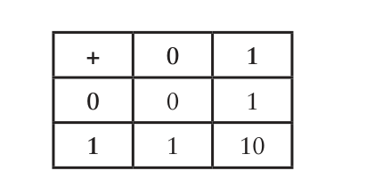
Fig. 1 — The complete binary addition table. Only four cases needed.
Reading this aloud:
- 0 + 0 = 0 — nothing added to nothing is nothing
- 0 + 1 = 1 — zero and one is one
- 1 + 0 = 1 — one and zero is one
- 1 + 1 = 10 (binary) — one and one is zero, carry the one
📌
The last case — 1 + 1 — is the crucial one. In binary, the result has two digits: a sum bit (the right digit of the result) and a carry bit (the left digit, carried into the next column). This mirrors exactly what you do in decimal when 9 + 1 = 0 carry 1.
The key insight: adding two binary digits always produces exactly two output bits — a sum and a carry. These two outputs are independent and must be generated by separate logic. This is why binary addition maps so naturally onto logic gates: each output is a separate Boolean function of the same two inputs.
Here is a longer binary addition to illustrate that columns with carries work the same way:
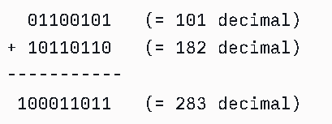
Fig. 2 — Adding 01100101 (101) and 10110110 (182). Carries propagate from column to column, just like decimal.
We want to add 8-bit numbers — values from 00000000 to 11111111 (decimal 0 to 255). The sum of two 8-bit numbers can reach as high as 510 in decimal — which needs 9 bits to represent. So our adding machine needs eight input pairs (one pair per bit column), and nine output lights (the ninth lights up only if the result exceeds 255).
Section 03
3.Splitting the Problem — Sum Bit and Carry Bit Separately
The reason binary addition is manageable for logic gates is that the sum and carry outputs can be treated as completely independent problems. We split the single addition table into two separate truth tables — one for each output — and then design a separate logic circuit for each.
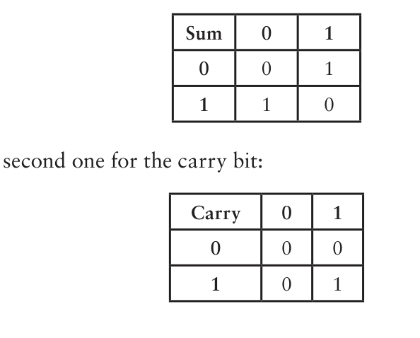
Fig. 3 — The addition table split into its two components. Sum (top) and Carry (bottom) can each be implemented by a separate gate.
Two sub-problems, recognised immediately from existing gates
Carry Table — looks familiar?
| A | B | Carry | Same as… |
|---|
| 0 | 0 | 0 | 0 AND 0 |
| 0 | 1 | 0 | 0 AND 1 |
| 1 | 0 | 0 | 1 AND 0 |
| 1 | 1 | 1 | 1 AND 1 ✓ |
⚡
The carry table is identical to the AND truth table. A single AND gate gives us the carry output for free.
Sum Table — something new
| A | B | Sum | Notes |
|---|
| 0 | 0 | 0 | Like OR ✓ |
| 0 | 1 | 1 | Like OR ✓ |
| 1 | 0 | 1 | Like OR ✓ |
| 1 | 1 | 0 | Unlike OR ✗ |
❓
The sum table is almost OR — but OR gives 1 when both inputs are 1, whereas we need 0 there. No existing single gate matches this. We need to build something new.
Section 04
4.Building the Sum Circuit — XOR Gate and the Half Adder
Deriving the Sum Circuit from OR, NAND, and AND
The sum table needs a circuit that outputs 1 when exactly one of the two inputs is 1 — but 0 when both are 1. Neither OR nor NAND alone matches it. But notice something: if we look at the OR output and the NAND output side by side, the combination tells us exactly when we want a 1 in the sum:
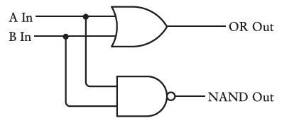
Fig. 4 — OR and NAND connected to the same two inputs A and B. Small dots mark where wires actually connect.
| A In | B In | OR Out | NAND Out | What we want (Sum) |
|---|
| 0 | 0 | 0 | 1 | 0 |
| 0 | 1 | 1 | 1 | 1 |
| 1 | 0 | 1 | 1 | 1 |
| 1 | 1 | 1 | 0 | 0 |
The pattern in the last column is 1 only when both the OR output and the NAND output are 1. That is precisely what an AND gate does. So feeding both the OR output and the NAND output into an AND gate gives us exactly the sum we need:
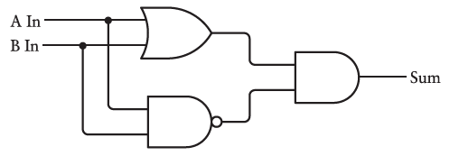
Fig. 5 — Three gates, still just two inputs and one output. A and B enter both the OR gate and the NAND gate. Their outputs feed an AND gate — the result is the sum bit.
The XOR Gate — the Exclusive OR
This three-gate combination (OR + NAND + AND) is so useful and so common that it has its own name and symbol: the XOR gate, short for Exclusive OR. It is called "exclusive" because its output is 1 if A is 1 or B is 1 — but not both. The plain OR gate is inclusive (both inputs being 1 still gives 1); the XOR gate excludes that case.
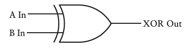
Fig. 6 — XOR gate symbol: same shape as OR but with an extra curved line at the input side.
XOR Truth Table
| Input A | Input B | XOR Output |
|---|
| 0 | 0 | 0 |
| 0 | 1 | 1 |
| 1 | 0 | 1 |
| 1 | 1 | 0 |
🔑
XOR = 1 when the inputs differ. XOR = 0 when the inputs are the same. This makes it the "are these two bits different?" gate.
📌
XOR is built from three gates (OR + NAND + AND), each requiring two relays — a total of six relays hidden inside. This is an example of encapsulation: complex internals are wrapped in a clean symbol. We can always open the box if needed, but usually we just use the symbol.
The Half Adder — Combining XOR and AND
We now have everything needed to add two single bits. The sum bit comes from an XOR gate; the carry bit comes from an AND gate, both fed by the same two inputs A and B:
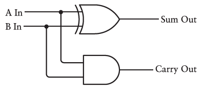
Fig. 7 — The complete 1-bit adder circuit. A and B enter both gates. XOR produces the sum; AND produces the carry.
This circuit is given a name of its own: the half adder. As always, rather than redrawing the internals every time, we represent it as a labelled box:
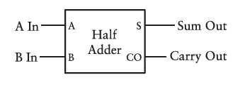
Fig. 8 — The half adder box. Inputs A and B on the left; Sum (S) and Carry Out (CO) on the right. Eight relays hidden inside.
Relay count inside one half adder
OR gate2 relays
NAND gate2 relays
AND gate (completes XOR)2 relays
AND gate (carry output)2 relays
Half adder total8 relays
⚠️
The half adder is called "half" for a specific reason: it only adds two bits, with no provision for a carry coming in from a previous column. When adding multi-bit numbers, every column after the first might receive a carry from the column to its right. The half adder cannot accommodate this — we need something more capable for those positions.
Section 05
5.The Full Adder — Handling the Carry-In
When we add a multi-bit number column by column — working from right to left — every column after the first can receive a carry in from the previous column's addition. For example, adding 1111 + 1111: the rightmost column gives 0 carry 1, and that carry must be added into the second column along with the two input bits there. We are suddenly adding three bits, not two.
A half adder cannot do this. It takes two inputs and has no carry-in port. To handle all columns of a multi-bit addition, we need the full adder — a circuit with three inputs (A, B, and Carry In) and two outputs (Sum and Carry Out).
Building the Full Adder from Two Half Adders and an OR Gate
The solution is elegant. We use two half adders in sequence, then collect their carry outputs with an OR gate:
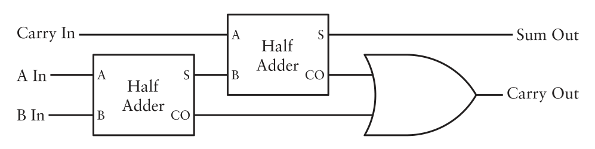
Fig. 9 — The full adder circuit. Half Adder 1 adds A and B. Its sum is then added to Carry In by Half Adder 2. The two carry outputs are combined by an OR gate.
Let us trace through the logic carefully:
1
Half Adder 1: takes A and B as inputs
Produces a partial Sum₁ and a Carry₁. This is the result of adding just the two column bits, ignoring any incoming carry.
2
Half Adder 2: takes Sum₁ and Carry In as inputs
Now adds the partial sum from step 1 to the carry that arrived from the previous column. Produces the final Sum output and a Carry₂.
3
OR gate: takes Carry₁ and Carry₂
Produces the final Carry Out. Why an OR gate and not another half adder? Because Carry₁ and Carry₂ can never both be 1 at the same time — so OR and XOR give identical results here, and OR is simpler.
The full adder is again encapsulated as a box with standardised labels:
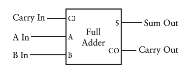
Fig. 10 — The full adder box. Three inputs: Carry In (CI), A, B. Two outputs: Sum (S), Carry Out (CO).
The Full Adder Truth Table
With three inputs, there are eight possible combinations. The full adder handles all of them:
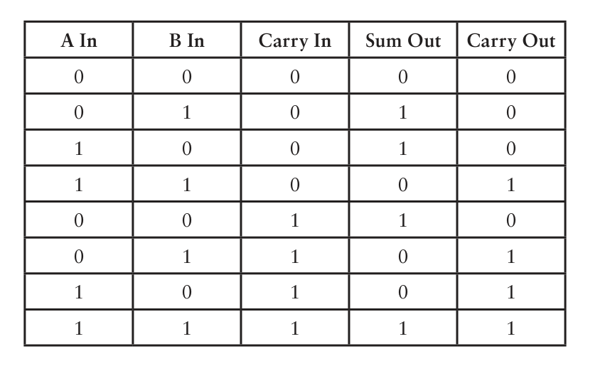
Fig. 11 — Full adder truth table. All 8 combinations of A, B, and Carry In, with their Sum and Carry Out results. Verify a few: 1+1+1 = 3 = binary 11 (Sum=1, Carry Out=1). ✓
Relay count inside one full adder
Half Adder 1 (XOR + AND)8 relays
Half Adder 2 (XOR + AND)8 relays
OR gate (carry combiner)2 relays
Full adder total18 relays
Section 06
6.Chaining Eight Full Adders — The Complete 8-Bit Adding Machine
We now have a full adder that can add one column of a binary number — two bits plus an incoming carry — and pass a carry out to the next column. To add two complete 8-bit numbers, we simply chain eight full adders together, one per bit column, each passing its Carry Out to the next adder's Carry In.
Connecting the First Column
The rightmost column is the only one that never receives an incoming carry (there is no column to its right). So we connect its Carry In permanently to ground — the binary equivalent of 0:
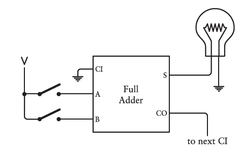
Fig. 12 — The rightmost full adder. CI is grounded (= 0). The two rightmost switches connect to A and B inputs. Sum lights the rightmost bulb; CO passes to the next adder.
Connecting Every Subsequent Column
For every column from the second onward, the Carry Out of the previous adder feeds into the Carry In of the current one. The inputs come from the next pair of switches; the output lights the corresponding bulb:
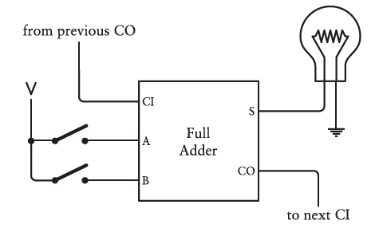
Fig. 13 — The second full adder. Its CI input receives the CO from the first adder. This pattern repeats for all eight columns.
The Complete Chain of Eight
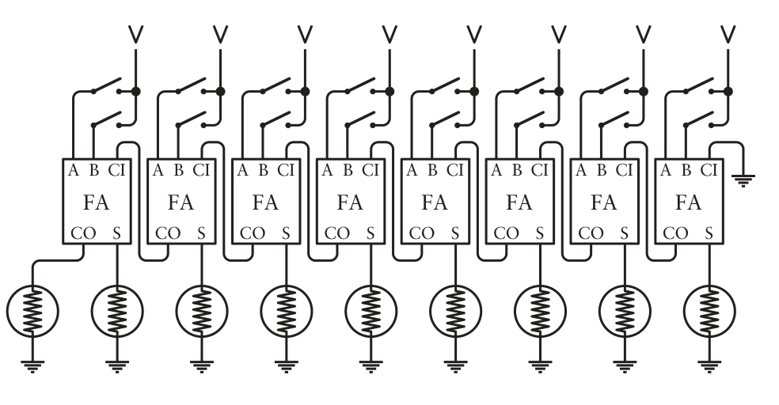
Fig. 14 — All eight full adders chained. CO from each feeds the CI of the next (left). The rightmost CI is grounded. The leftmost CO drives the ninth (overflow) bulb.
Reading the diagram: the least significant bit (rightmost) is on the right, exactly as we write numbers. Each carry ripples leftward from column to column. The very last carry out — if it is 1 — means the sum overflowed 8 bits and the ninth bulb lights up.
The Complete 8-Bit Adder Encapsulated
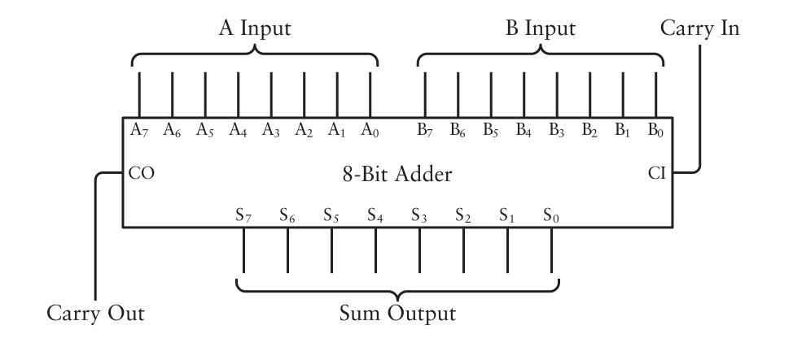
Fig. 15 — The 8-bit adder as a single box. Inputs A₇…A₀ and B₇…B₀ (two 8-bit numbers); outputs S₇…S₀ (the 8-bit sum) and Carry Out for overflow. The subscripts correspond to powers of 2 (A₀ = 2⁰, A₇ = 2⁷).
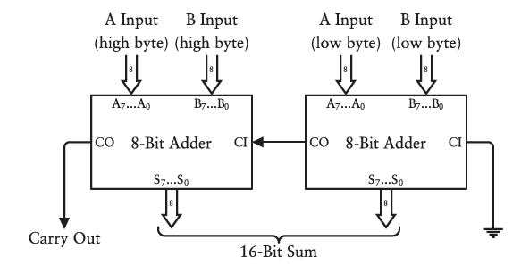
Fig. 16 — Cascading two 8-bit adders makes a 16-bit adder. The low-byte adder's CO feeds the high-byte adder's CI. The principle scales to any width.
Total relay count for the complete 8-bit adder
1 full adder18 relays
× 8 columns= 144 relays
8-bit adding machine total144 relays
🏗️
The Power of Encapsulation
At each level, complexity was hidden inside a cleaner abstraction: six relays became an XOR gate; XOR + AND became a half adder; two half adders + OR became a full adder; eight full adders became an 8-bit adder. This layered approach — building complex things from simpler named units — is the same principle used in every programming language, every operating system, and every piece of software ever written. It is not just a circuit design technique; it is the fundamental method of managing complexity in computing.
⚡
Part Two
From Relays to Transistors to Integrated Circuits — The Hardware Evolves
Section 07
7.The Hardware Evolves — Vacuum Tubes, Transistors, and Chips
The 8-bit adder we just built works perfectly in principle. But 144 mechanical relays clicking back and forth is slow, bulky, and fragile — relays bend metal, and metal eventually breaks. The history of computer hardware is the story of replacing relays with progressively smaller, faster, and more reliable switching devices, while keeping the underlying Boolean logic completely unchanged.
A Brief History: Relay → Vacuum Tube → Transistor → Chip
1937–45
Electromechanical computers (relays). George Stibitz built the first relay-based 1-bit adder on his kitchen table in 1937 — the "Model K." Bell Labs developed the Complex Number Computer (400+ relays) by 1940. The Harvard Mark I (1943) used 3,000 relays; the Mark II used 13,000. They were slow (a relay switches in ~1 millisecond) and mechanical failure was common. In one famous 1947 incident, a moth trapped in a relay of the Harvard Mark II was taped into the logbook with the note "First actual case of bug being found" — the origin of the term bug.
1940s
Vacuum tubes replace relays. A tube switches ~1,000× faster than a relay (microseconds vs milliseconds). The ENIAC (1945) used 18,000 vacuum tubes and weighed 30 tonnes. But tubes were expensive, consumed vast power, generated enormous heat, and burned out constantly — a computer with 18,000 tubes might lose several per day.
1947
The transistor is invented. John Bardeen and Walter Brattain at Bell Labs demonstrated the first transistor on December 16, 1947, using germanium and gold foil. Their supervisor William Shockley refined the design. All three shared the 1956 Nobel Prize in Physics. The transistor replaced the vacuum tube's heated filament with a solid semiconductor — smaller, cooler, faster, cheaper, longer-lasting. The transistor is arguably the most important invention of the 20th century.
1956
First transistor computers. Shockley moved to Palo Alto to found Shockley Semiconductor — the first company in what would become Silicon Valley. Within years, relays and tubes were abandoned for new computer designs.
1958–59
Integrated circuit invented (simultaneously). Jack Kilby at Texas Instruments and Robert Noyce at Fairchild Semiconductor independently realised that multiple transistors — and resistors, capacitors — could be fabricated from a single piece of silicon. Legal battles over patents lasted a decade; both are now recognised as co-inventors of the IC (integrated circuit), commonly called the chip.
1965
Moore's Law. Gordon Moore (Fairchild, later Intel co-founder) observed that transistor count per chip had doubled every year since 1959. He predicted this would continue. The observation held approximately true for decades and drove the relentless miniaturisation that brought computers into homes, pockets, and now wrists.
The NPN Transistor — A Solid-State Relay
The transistor works by the same principle as a relay — a small control signal governs a larger output current — but with no moving parts. In an NPN transistor, three layers of semiconductor material are sandwiched together. The three connections are called the Collector, Base, and Emitter.
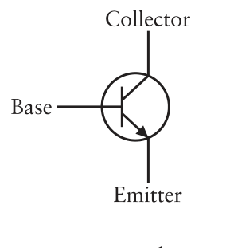
Fig. 17 — NPN transistor schematic. A small voltage on the Base controls a much larger current flowing from Collector to Emitter.
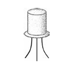
Fig. 18 — Physical transistor package: a small metal can ~¼ inch diameter with three legs (Collector, Base, Emitter). Solid-state — no vacuum, no filament, no moving parts.
How an NPN transistor acts as a switch
- No voltage on Base: transistor is "off" — no current flows from Collector to Emitter. Output = 0.
- Voltage on Base: transistor is "on" — current flows freely from Collector to Emitter. Output = 1.
- The Base voltage needed is tiny compared to the Collector–Emitter current it controls. This is amplification — originally the transistor's primary purpose, later repurposed for switching logic.
Transistors Wired as Logic Gates
Every logic gate that was built from relays in Module 2.2 can be built from transistors in the same structural pattern. The wiring configurations are analogous — series for AND, parallel for OR — but transistors are physically thousands of times smaller and switch millions of times faster.
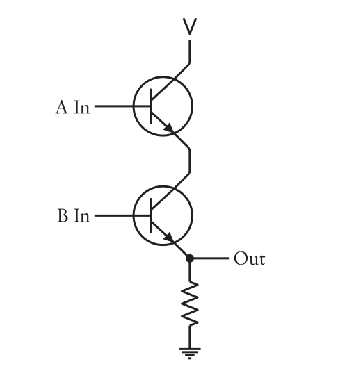
Fig. 19 — Transistor AND gate. Two NPN transistors in series: current only flows to the output when both A and B have voltage on their bases.
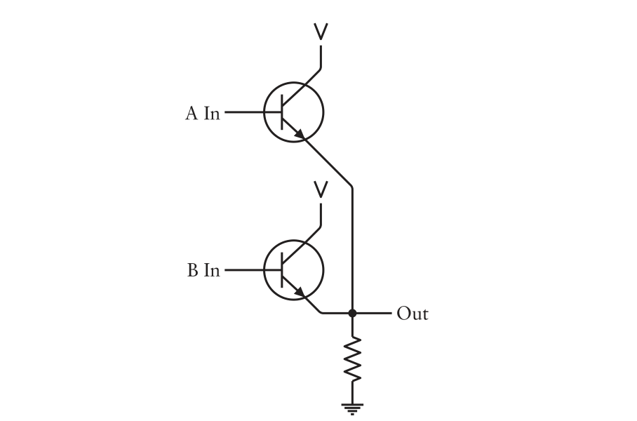
Fig. 20 — Transistor OR gate. Two NPN transistors in parallel: current flows when either A or B has voltage on its base.
💡
The Boolean logic is identical. Everything we established about gates — AND, OR, NOT, NAND, NOR, XOR, half adder, full adder, 8-bit adder — is equally valid whether built from relays, vacuum tubes, or transistors. The underlying math does not change; only the physical implementation does.
Integrated Circuits — Gates on a Chip
Transistors reduced the size of individual gates enormously compared to relays. But wiring thousands of transistors by hand was still slow and error-prone. The integrated circuit solved this by fabricating multiple transistors — already wired into gate configurations — on a single piece of silicon. The chip is thin and delicate, so it is mounted inside a protective plastic package with metal pins for external connections. The most common form factor was the Dual Inline Package (DIP):
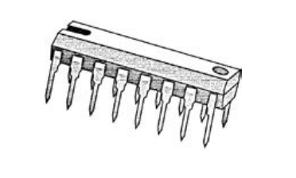
Fig. 21 — A 16-pin DIP integrated circuit. Pins run along both sides, spaced 1/10 inch apart. The notch at one end marks pin 1's orientation.
The TTL 7400 Series — Gates as Commodity Parts
By the mid-1970s, Texas Instruments and other manufacturers had standardised a family of TTL (Transistor-Transistor Logic) integrated circuits known as the 7400 series. Each chip number beginning with "74" indicates a specific pre-wired gate configuration. A digital engineer of that era would have the TTL Data Book for Design Engineers permanently on their desk.
Key chips in the 7400 series:
7400
Four 2-input NAND gates. The first chip in the series; NAND is universal.
7402
Four 2-input NOR gates. Also universal.
7404
Six inverters (NOT gates).
7408
Four 2-input AND gates.
7432
Four 2-input OR gates.
7430
One 8-input NAND gate.
7483
4-bit binary full adder.
74182
Look-ahead carry generator — speeds up multi-bit addition.
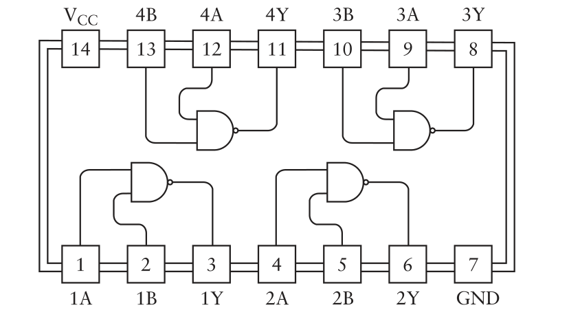
Fig. 22 — 7400 chip pinout (top view). Four independent 2-input NAND gates. Pin 14 = V_CC (5V supply); Pin 7 = GND. Propagation time ≤ 22 nanoseconds per gate.
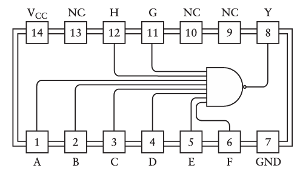
Fig. 23 — 7430 chip pinout: a single 8-input NAND gate. Output Y = 1 only when all eight inputs are 1. NC = No Connection.
⏱️
Propagation time and nanoseconds. One nanosecond = one billionth of a second. The NAND gates in a 7400 chip switch in under 22 nanoseconds. To put this in perspective: if you are holding this page one foot away from your face, a nanosecond is approximately the time it takes light to travel from the page to your eyes. The nanosecond is what makes computers useful — each individual step is trivial, but billions of trivial steps per second can solve any computable problem.
➖
Part Three
Subtraction — Turning a Difficult Problem into Addition
Section 08
8.Subtraction Without Borrowing — Complements and Two's Complement
Our adding machine adds beautifully. But subtraction involves borrowing — a back-and-forth mechanism that is fundamentally harder to implement in hardware than the left-to-right carry propagation of addition. Rather than design a separate subtraction circuit, computer designers found a smarter way: turn every subtraction into an addition.
The Idea: Complement Arithmetic
The key observation is that subtraction is the same as adding a negative number. And negative numbers in a fixed-digit system can be represented without a minus sign — by using a complement. In decimal with 3 digits, the nines' complement of 176 is 999 − 176 = 823. Computing 253 − 176 becomes:
Subtraction via nines' complement — no borrowing needed
253 − 176 = ? The ordinary problem
= (999 − 176) + 253 + 1 − 1000 Add and subtract 1000; split 1000 as 999+1
= 823 + 253 + 1 − 1000 823 = nines' complement of 176 (no borrowing needed!)
= 1077 − 1000 = 77 Drop the leading 1 (ignore overflow)
Critically, subtracting any number from a string of 9s never requires borrowing. The nines' complement can always be computed by simple subtraction-from-nine digit by digit. Then we replace the subtraction with addition, add 1, and discard any overflow digit.
The Binary Equivalent: Ones' Complement and Two's Complement
In binary, the string of 9s becomes a string of 1s. Subtracting a binary number from 11111111 (all ones) is called the ones' complement — and it is even simpler than in decimal: every bit is just flipped. The ones' complement of 10110000 is 01001111. No arithmetic needed at all — just an inverter per bit.
Binary subtraction via ones' complement — same idea, simpler operation
253 − 176 = ? In binary: 11111101 − 10110000
Ones' complement of 10110000 = 01001111 Flip every bit — no arithmetic!
01001111 + 11111101 + 1 Add ones' complement + the other number + 1
= 101001101 then drop the 9th bit, equivalent to subtracting by 100000000
= 01001101 = 77 ✓ Same answer as decimal method
The ones' complement + 1 is so important it has its own name: the two's complement. Two's complement is the standard way all modern computers represent and process negative numbers.
The Circuit: Controlled Inversion with XOR
To make a combined add/subtract machine, we need to invert the B input bits only when subtracting — not when adding. Eight inverters would always flip the bits, which is wrong for addition. The solution uses eight XOR gates with a shared Invert control signal:
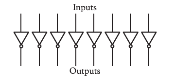
Fig. 24 — Eight inverters always flip all bits. This works for subtraction but breaks addition — we need controlled inversion.
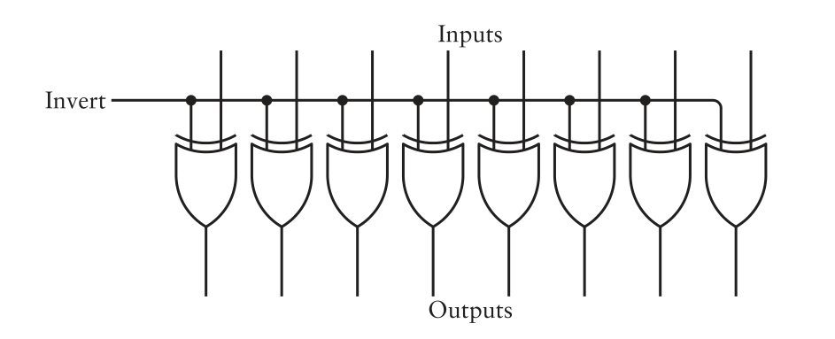
Fig. 25 — Eight XOR gates with a shared Invert input. When Invert = 0, all bits pass through unchanged. When Invert = 1, all bits are flipped. One control signal governs all eight.
Why does this work? Recall the XOR truth table: XOR with 0 passes a bit unchanged; XOR with 1 flips a bit. By making one input of each XOR gate the same shared Invert signal, we get conditional inversion across all eight bits simultaneously with a single switch.
The Complete Add/Subtract Machine
The Ones' Complement circuit (eight XOR gates) sits between the B input switches and the 8-bit adder. The same Subtract signal that controls the inversion is also fed directly into the Carry In port of the adder — this supplies the "+1" that converts ones' complement into two's complement. So the entire subtraction is automatic:
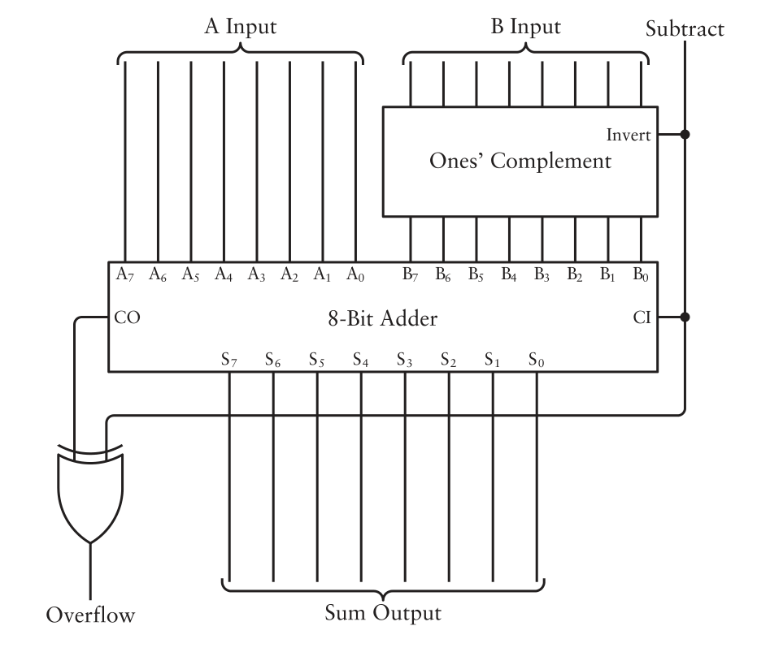
Fig. 26 — The complete add/subtract machine. The Subtract signal simultaneously inverts the B inputs (via the Ones' Complement block) and sets CI = 1 (adding 1 to form two's complement). For addition, Subtract = 0: B passes unchanged and CI = 0. The Overflow output uses an XOR gate on the Subtract signal and the adder's CO.
Two's Complement and Signed Integers
Two's complement not only enables subtraction — it is also the standard way of representing negative numbers in binary. In an 8-bit two's complement system, the most significant bit (bit 7) serves as the sign bit: 0 means positive, 1 means negative. The range of values shifts from 0–255 (unsigned) to −128 through +127 (signed):
| Integer Size | Unsigned Range | Signed Range |
|---|
| 8 bits | 0 to 255 | −128 to 127 |
| 16 bits | 0 to 65,535 | −32,768 to 32,767 |
| 32 bits | 0 to ~4.3 billion | ~−2.1B to ~2.1B |
| 64 bits | 0 to ~18.4 quintillion | ~±9.2 quintillion |
⚠️
Overflow in signed arithmetic. If you add two positive numbers and the result's sign bit is 1 (appears negative), that is overflow — the result is too large for the allocated bits. Similarly, two negative numbers adding to a positive-looking result is overflow. The rule: overflow occurs when the sign bits of both operands are the same, but the sign bit of the result differs.
🌟
The Elegance of Two's Complement
Two's complement is not a trick — it is the mathematically correct way to represent integers in a fixed-width binary system. Its biggest advantage: you can freely add positive and negative numbers using exactly the same addition circuit, with no special cases. A computer's adder does not need to know or care whether the numbers it is adding are "supposed to be" positive or negative — the arithmetic works out correctly regardless, as long as the programmer tracks whether the interpretation is signed or unsigned. Bits are just bits; context determines their meaning.
Section 09
9.Quick Reference Summary
Gates and Adder Components
| Component | Built From | Relays | Inputs | Outputs | Key Rule |
|---|
| XOR gate | OR + NAND + AND | 6 | A, B | 1 | Output 1 when inputs differ |
| Half Adder | XOR + AND | 8 | A, B | S, CO | Adds 2 bits; no carry-in |
| Full Adder | 2 × Half Adder + OR | 18 | A, B, CI | S, CO | Adds 3 bits; has carry-in |
| 8-bit Adder | 8 × Full Adder | 144 | A[7:0], B[7:0], CI | S[7:0], CO | Adds two 8-bit numbers |
Key Terms
| Term | Meaning |
|---|
| Sum bit | The right digit of a 1-bit addition result (produced by XOR) |
| Carry bit | The left digit — carried to the next column (produced by AND) |
| Encapsulation | Hiding complex internals inside a named, reusable component box |
| Ripple carry | The carry propagating sequentially left through all columns; the last carry is the 9th-bit overflow |
| NPN transistor | Semiconductor switch: Base voltage controls Collector→Emitter current; same role as a relay but solid-state |
| Integrated circuit (IC) | Many transistors and gates fabricated on one silicon chip; a DIP chip has two rows of external pins |
| TTL | Transistor-Transistor Logic — a family of ICs (7400 series); 5V = logic 1, 0V = logic 0; propagation ~22 ns |
| Ones' complement | Binary equivalent of nines' complement: flip every bit (equivalent to subtracting from 11111111) |
| Two's complement | Ones' complement + 1; the standard representation for signed (positive and negative) integers in all modern computers |
| Sign bit | The most significant bit in a two's complement number: 0 = positive, 1 = negative |
| Overflow | Result too large or too small for the number of bits allocated; detected when sign bit of result differs from expected |
🧩
Module 2.3 Takeaway: Addition is the one operation from which everything else follows. Binary addition maps naturally onto two gates: XOR for the sum bit, AND for the carry. These combine into a half adder, two half adders into a full adder, eight full adders into an 8-bit machine. Relays gave way to vacuum tubes, then transistors, then integrated circuits — but the Boolean logic never changed. Subtraction is accomplished without a separate circuit by turning it into addition via two's complement — the same technique used inside every processor built since the 1960s.